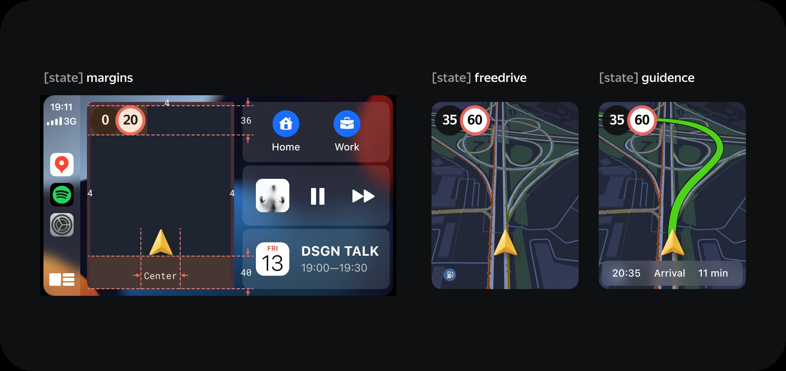
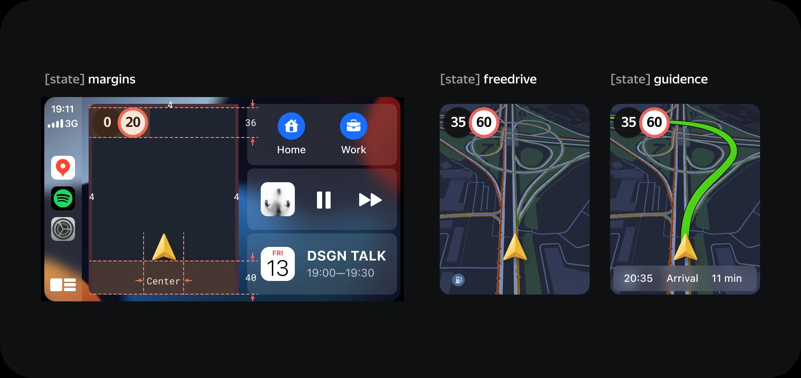

August, 2021
Yandex Maps and Navigator for CarPlay and Android Auto
Our team included me, the manager, and the developers. We developed and realized a Yandex Maps and Navigator for CarPlay and Android Auto. The key challenge was to create two apps on two platforms with our significant features limited by the platform environment. As a result, our apps are at the top of stores, and we published four apps in one day.
Context
Yandex Maps and Navigator is one of the leading geo-applications in Russia. Millions of people use our apps every day. Car platforms such as CarPlay and Android Auto are becoming more popular, and almost all new cars support CarPlay and Android Auto. That was one of the biggest requests in the App Store and Google Play for this feature. In November 2020, we started this project.

Problem
New applications are usually a problem. It was a challenge because CarPlay is a young platform, and Android Auto was in beta. Platforms like CP and AA have many limitations. That was a big issue because our product has features like contextual hints, speed limit, estimated arrival time overview, camera alerts, and Alice voice assistant. Our goal is to port our main features to new platforms.
Process. Preparing
We started with analytics on how people use our apps. We need to know which controls and settings are used the most. That was important because you can't do everything in your first release. These are the main features that should be in our first release.
For CarPlay and Android auto, you should use the guidelines and templates. That is huge of documentation with rules and restrictions. Luckily, most of our features fit perfectly into the guidelines.
We had some issues with AA because it was in beta. They changed the templates and implemented a new version of SDK that broke our builds.
If you're building something for cars, you need the right environment. We were testing our first mockups at the car. It was half the car. We used the Figma prototype on an iPad and this car to test the user interface and user experience. It was helpful because it was a quick dive into the right environment. But this only works in the early stages of product development.

Process. Dive in pixels. Architecture
I started with application architecture. Our quick research shows that people like using route guidance or history in a mobile app because it is the fastest way to get directions to point B. These are usually routed to home and from work.
After several iterations, we decided to show this suggestion on the main screen of our CP/AA application. But the CP layout doesn't have more than four main actions on the navigation bar, and our final version used two actions to build a route home and to work.
When the user starts moving, we hide the top bar and controls, which you can easily bring back if you touch the display or use the controls. We called it freediving mode. We show the speed limit and camera alerts, also the voice assistant speaks the warnings. It works the same way as it does in our mobile app. Users use this mode for routes they know but want speed limit information and alerts.
Many cars don't support touch gestures, so we keep the controls on display, and you can change the range or zoom.
The primary feature of CarPlay for us was the Dashboard. We need to add Dashboard support because it puts our app on the home screen when the user starts CarPlay. It works like magic. You get into your car, and then you will immediately see Yandex Maps. It starts automatically.
As you can see, we are using two buttons for home and work suggestions. We also support it in navigation mode.
 

I have an interesting fact about the speed limit indicator on the dashboard. In cities the turns are mostly right. We put the speed limit on the left side because we show more road information, and our users can see more. We noticed it after several road tests.
Process. Search
In the search, we put our favorite categories and two ad categories. All of these categories have a great fit into a driving scenario. For example, gas stations are important in driving cases. We also distribute our service Yandex Fuel. Also, you can use the keyboard or voice search. In Android Auto, we show the same thing so that the two apps look identical.
Voice search shows animation while it is listening to you. After that, we show a map with the result on which you can select a place and then get a direction. The search for organizations and toponyms works similarly.
Then once you have chosen a place, you are ready to see the directions and start driving.
Process. Guidence
In the app, we show three options for how to get to point B. In our mobile app, we show four at this case. But this Car Play template can only show three, or we must use the template as you saw in the search. But it is complicated and less convenient.
Let's press the start button. We will see the navigation screen.

Here you can see lane hints on the map, speed limits with camera alerts, and the ETA overview with your route status. We also show the name of the street. However, this element can show the condition of the traffic jam, for example, how many minutes the traffic jam will end.

On the navigation screen, we show you menus and controls. You can use the search or change the settings. But when you start moving, we will show you the speed limit and warnings. We hide the controls, but you can return them by touching the display.

We use contextual lane hints on the route from the mobile app, but we've simplified it and only show lanes without additional information. This is because CP and AA can show this information in the navigation template and so we cover the map less with unnecessary information.

I would say about moments with the color palette. As you know, a lot of cars have very terrible displays. But icons and text should be visible on the vehicle screen. When you're driving, this is important, and I use a minimum contrast ratio of 7:1. For cases where we show a lot of lines, we use padding, which is negative padding.
And on the dashboard. We do not show camera alerts and contextual lane hints on the map because the dashboard takes up little space, and displaying the map is a high priority. As you can see, all the elements are small on the dashboard.

It is how it looks in the application. In the case when we show all the elements. Some elements have the logic of hiding when they don't have enough space. All layouts and builds are tested in the smallest resolution CP/AA 400x240.
Testing
We tested the CP and AP apps every day on the road. We received the first build after several weeks of development. We then integrated feature by feature and debugged our applications. Showing the map was difficult because we adjusted an angle and zoom factor specifically for CP and AA. Unfortunately, you can't use the same setting from the mobile app.

We then got a stable build and started user testing. We use our staff people. We got a lot of feedback and bugs. We also tested the user experience of our activation scenario because it was with a paid wall.
Since it was COVID time, we did an online UX study. We saw several activation issues, and our message was unclear.
Result
As a result, we released our CP and AA application on two platforms in one day. We have received many press releases and reviews on YouTube. Many influencers and bloggers have reviewed our new feature.
The most requested feature is now in production. But our work is not over. It is only the first implementation and a small part of our ideas.

I like this project and the result we have now. Every day people use our application, and when I see it among the surrounding cars in traffic, it's a great pleasure.